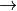

Introduction¶
Objectives¶
Now the situation has changed, attackers are looking for weaknesses (often called vulnerabilities) deliberately “perturbate” a system which may be introduced intentionally. Our goal will be in the context of software :
- To understand classical vulnerabilities (buffer overflow , privileges escalation,...)
- To understand how they can be exploited in larger attacks shell , backdoor,...)
- To mitigate those vulnerabilities as much as possible (canary, smatching ,...)
Hacking tools¶
The course introduces vulnerabilities that lead to exploits. There is a wide range of pre-computed exploits to be applied but the objective is to create our own exploits and not only reusing ones.
Attacks are difficult to find, but often easy to reproduce!
Security: A definition ?¶
Difference between safety and security¶
| Safety | Security |
|---|---|
| Protect against fault unintended consequences. Defined by statistic on life duration of hardware. | Protect against voluntary malicious actions. Cannot be quantified. |
| Example: error hardware failure | Example: deny of service, data theft |
| Deflect: backup | Deflect: access control, filtering |
Safety helps security. As an example: disponibility. One tries to chose equipment that have a long lifetime and that are reliable (almost no bug).
Cyber security¶
Cyber security aims at reducing risks to limit their impact on the system. The objective is not obstruction, but to contribute to quality of service and to guarantee the right security level to workers. It has a financial cost whether you push for it or whether you let it be broken.
Attacker’s motivations¶
During the old good day, the motivations was mainly for fun but nowadays, there is the rise of very organized cyber delinquency with main objectives to damage, to harm money, politics, religion, concurrent organization, mercenaries, ...
These new web-based (and criminal) financial organization are compose of various actors:
- Group of specialist in vulnerability analysis, malwares, exploits,
... (
 TECos)
TECos) - And groups to exploit and commercialize services to conduct cyber security attacks. (i.e Host site to store malicious content, Groups who sell stolen data, mostly banking ones, Financial intermediary to store the money, ...)
The potential objectives and consequence are vast but it usually concern
either financial reward, either resources stealing, either
blackmail/extortion, or even intelligence gathering which can lead to
privacy/reputation issues, lose of data, identity theft and have
financial impacts concerning private life and also legal and organisational* impact for the industry. ( black hat).
Here are some examples:
- Rex Mundi that steal customer data of Dominos Pizza in France and threaten them to to reveal everything if they do not pay them.
- Cryptolocker that ask for some bitcoin in exchange of a key to unlock the infected system.
- A medical company where the risk is to leak personal data from patients (confidentiality) which can impact their image and finance. This could motivated by revenge or competition
- A nuclear/electric plant where the risk is to shutdown the plant (availability) and can impact the service. Here the motivation is to paralyse the vital structure.
Not hackers are bad guys, some of them have as main objective to find vulnerabilities and force
correction( white hat).
Example: Barnaby Jack and the jackpot hit/atm jackpotting
Critical infrastructures¶
The critical infrastructures are the et of organisations among activity sectors that are essential for a nation. They represent the sectors of interest, e.g
- State: military activities, justice,...
- Protection of citizens: health, water supply, food
- Economy and society: energy, communication, transport, and finances and some industry
In France/Belgium, these are classified as vital operators. The exact list is secret.
Risk analysis¶
As time goes on, the standards and guidelines for cyber security will become more stringent, even though it is currently cheaper to ignore these issues until an attack occurs. Companies have to conduct security audits, GDPR imposes security referent (RSSI) to each company even small ones. Norms exists to perform risk analysis (ISO 27001, ...) Most of time, they’re adapted from financial risk. Norms frame what has to be checked, the security attributes, but not how to check them.
Security triad¶
Criteria used to define security levels of an IS and is used as a metric to evaluate its security.
Disponibity :
Can be accessed when needed by those who are allowed, those who are not allowed should not forbid access to those who are allowed.
Integrity :
Must be exact and complete. Should not be modified in an illegal illegitimate manner, but only by those who are allowed
Confidentiality :
Can only be accessed by those who are allowed, and forbid them to disclose information to those who are not allowed to access it
Can be: Strong, average, low average, ...
Risk analysis is a core business and is proven to save money. Can be free (EBIOS by ANSSI) or expensive (Octave, Cramm, String). Can be dedicated to a specific business or general but in reality cannot be entirely deployed because they are too wide/complex.
Attacks classification¶
- Indiscriminate attacks (petya, red october [malware collects many things], ...) are wide ranging and global, without specific target
- Destructive attacks (TV5, operation ababil [us, financial], ..) relate to inflicting damage on specific organizations
- Cyberwarfare attacks (Estonia , Burma, ...) are politically motivated destructive attacks aimed at sabotage and espionage.
- Government espionage attack (ghostnet , ...) aim at stealing government information
- Corporate espionage attacks (operation socialists, …) aim at stealing proprietary methods
Other private life oriented attacks aim at
- stealing credit card/financial data
- and stealing medical related data
In constant evolution with technology and opportunities!
From vulnerabilities to exploit¶
Vulnerability, Threat, Attack¶
An attack only occurs if a vulnerability exists, so the first goal of an attacker is to find such a vulnerability where the potential surface of attack is large (e.g connected car with many components). It goes from software or hardware to their interactions and connections.
{kind=link}
{kind=link}
{kind=link}
Timeline of an attack¶
There is no clear definition of what are cyber attack steps but here are the main ones :
- Spy: Find a vulnerability to access the system (fishing, buffer overflow, ...)Software vulnerability via memory time and space issues
- Intrusion: Exploit vulnerability to get an access to the systemBuffer overflow and format string overflow
- Escalation/spread: Escalade privileges (root, get access to other user account of the system)Root access for linux systems
- Attack: Break one or more cyber security attributeMirai Malware
- Disappear: Elimination of traces of activitiesNot done here
Example :
- Pirate spies the system and notices that a ssh service remains open on a remote machine via username password access only (SSH ports and services should not be opened  Fishing and backdoors and buffer overflow)
- Pirate brute forces the access using john the ripper software and get access
- Pirate notices that python is installed and can be launched with
sudocommand. From there he gets access to any account in the system (Python should not be started with sudo Kernel and Cron exploit) - Pirate changes the password of all users
- Pirate cleans the logs of the system and disconnect
Spy and intrusion¶
There are two common ways to access a computer:
Fishing: is often a first step to gain access , before privilege escalation (and technical), two times more aggressive for individuals than companies. This usually take the form of an official email that ask for login or something else bad.
- Do not pay, probably fake and easily checked on Google.
- 140 attacks per hour
- 2 times more aggressive for individuals than companies.
Technical (backdoor, password hack, protocol abuse, ...)
- Find open port/service
- Hack password (john the riper)
- Buffer oveflow messages in exchange protocols
- Exploit a backdoor (Eternalblue)
- ...
Can be found on : https://www.cvedetails.com/. We can also use the Metasploit Framework is an open source penetration testing and development platform that provides exploits for a variety of applications, operating systems and platforms. Metasploit is one of the most commonly used penetration testing tools and comes built-in to Kali Linux.
The main components of the Metasploit Framework are called modules. Modules are standalone pieces of code or software that provide functionality to Metasploit. There are six total modules: exploits (takes advantage of a system’s vulnerability and installs a payload), payloads (gives access to the system by a variety of methods), auxiliary, nops, posts, and encoders.
Some counter measures¶
Counter measures helps to perceive the system to be safer but this is not always the case, and a counter measure may be vulnerable.
| Some known | More technical |
|---|---|
| No @ in URLs | Artificial intelligence |
| Check domain’s name and Certificats | Stack/ heap /compiler protections |
| Anti-spam and anti-virus | Static and dynamic validation tools |
| Software update |
Example :
- Security: « if you lose your password, please click here, a code will be send via SMS »
- Problem: during years, it was possible to redirect phone number via phone call to operator
Safe links - Database example¶
When someone clicks on a URL in an email, Safe Links (anti-virus/static) checks if it is malicious or safe before rendering the webpage in the user’s browser. This is done via static comparison with Microsoft database. If the URL is identified as insecure, the user is taken to a page displaying a warning message asking them if they wish to continue to the unsafe destination.
https://www.avanan.com which is used as :
https://na01.safelinks.protection.outlook.com/?url=www.avanan.com
NSA could collaborate with Microsoft (intentional backdoor)
Safe Links does not dynamically scan URLs: it only verifies if the URL is on known blacklists of malicious sites. It struggles to detect zero day, unknown URLs.
Safe Links can’t act on detection Across Mailboxes: identifies a malicious URL, it does not generate an alert to notify admin of instances of the same link in other user mailboxes.
- Safe Links scan doesn’t apply safe links to domains that are white listed by Microsoft. Popular sites like Google.com are given a pass.Danger: “Open Redirect Google Attack”.Problems: Google never said it will check links … and it trusts its ow domain! Google redirect vulnerability: send your secretary a mail with the following link
{kind=link}
Hardware Hack¶
It is expected that attack surface is at software level. However , it is not always the case: hardware surface shall be considered.
- Hardware from IoT or even family computers offers a wide range of perspectives
- Some are still at proof concept level . Ex: Frozen Memory Hack
- Others are already deployed . Ex: hardware keylogger (Keylogger are software that records the keys struck on a keyboard, used to spy but must be installed directly on computer, Hardware keylogger do the same but at hardware level)
Am I allowed to do that?¶
On your own machine only
“Hacking is a very vague notion. Consists of illegally entering a computer system. This “break-in” generally implies an intention fraudulent. But unintentionally making a connection and keeping it willfully is also considered piracy. Even hack a computer system that is not or barely secure is punishable.“
“In assessing hacking, the law distinguishes ‘insiders’ from ‘outsiders’. The insiders have access permission, but override that permission. These people are only punishable if their hacking conceals an intention to harm or fraudulent intent. For “outsiders”, this restriction does not exist not: they are in all cases liable to sanctions, even if they intrude in a system with “good intentions”. “
“It is forbidden to collect or offer - for remuneration or not - data allowing computer breaches. This ban aims above all to curb the trade in access codes and ‘hacking tools’. “